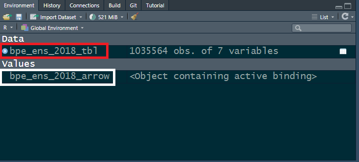

library(arrow)
library(dplyr)
# Autoriser arrow à utiliser plusieurs processeurs en parallèle
options(arrow.use_threads = TRUE)
# Définir le nombre de processeurs qu'arrow peut utiliser
arrow::set_cpu_count(parallel::detectCores() %/% 4)19 Manipuler des données avec arrow
19.1 Tâches concernées et recommandations
L’utilisateur souhaite manipuler des données structurées sous forme de data.frame par le biais de l’écosystème Arrow (sélectionner des variables, sélectionner des observations, créer des variables, joindre des tables).
Tâches concernées et recommandations
Pour des tables de données de taille petite et moyenne (inférieure à 1 Go ou moins d’un million d’observations), il est recommandé d’utiliser les packages
tibble,dplyrettidyrqui sont présentés dans la fiche Manipuler des données avec letidyverse;Pour des tables de données de grande taille (plus de 1 Go en CSV, plus de 200 Mo en Parquet, ou plus d’un million d’observations), il est recommandé d’utiliser soit les packages
arrow(qui fait l’objet de la présente fiche) et#duckdb(voir la fiche Manipuler des données avecarrow), soit le packagedata.tablequi fait l’objet de la fiche Manipuler des données avecdata.table.Il est essentiel de travailler avec la dernière version d’
arrow, deduckdbet deRcar les packagesarrowetduckdbsont en cours de développement. Par ailleurs, les recommandations d’utilitRpeuvent évoluer en fonction du développement de ces packages.Si les données traitées sont très volumineuses (plus de 5 Go en CSV, plus de 1 Go en Parquet ou plus de 5 millions d’observations), il est essentiel de manipuler uniquement des objets
Arrow Table, plutôt que destibbles. Cela implique notamment d’utiliser la fonctioncompute()plutôt quecollect()dans les traitements intermédiaires.Pour les personnes qui découvrent
arrow, il est recommandé de partir de l’exemple de script de la Section 19.6 pour se familiariser avec l’usaged'arrow.
Note
Apprendre à utiliser arrow n’est pas difficile, car la syntaxe utilisée est quasiment identique à celle du tidyverse. Toutefois, une bonne compréhension du fonctionnement de R et de arrow est nécessaire pour bien utiliser arrow sur des données volumineuses. Voici quelques conseils pour bien démarrer:
- Il est indispensable de lire les fiches Importer des fichiers Parquet et Manipuler des données avec le
tidyverseavant de lire la présente fiche. - Il est complètement normal de rencontrer des erreurs difficiles à comprendre lorsqu’on commence à utiliser
arrow, il ne faut donc pas se décourager. - Il ne faut pas hésiter à demander de l’aide à des collègues, ou à poser des questions sur les salons Tchap adaptés (le salon Langage
Rpar exemple).
19.2 Présentation du package arrow et du projet associé
19.2.1 Qu’est-ce qu’arrow?
Apache Arrow est un projet open-source qui propose deux choses:
- une représentation standardisée des données tabulaires en mémoire vive appelée Apache Arrow Columnar Format, qui est à la fois efficace (les traitements sont rapides), interopérable (différents langages de programmation peuvent accéder aux mêmes données, sans conversion des données dans un autre format) et indépendante du langage de programmation utilisé.
- une implémentation de ce standard en
C++, qui prend la forme d’une librairieC++nomméelibarrow. Il existe d’autres implémentations dans d’autres langages; l’implémentation enRustest par exemple utilisée par le projetPolars, une librairie alternative àdplyr(R) ouPandas(Python) pour le traitement de données.
Un point important à retenir est donc que arrow n’est pas un outil spécifique à R, et il faut bien distinguer le projet arrow (et la librairie C++ libarrow) du package R arrow. Ce package propose simplement une interface qui permet d’utiliser la librairie libarrow avec R, et il existe d’autres interfaces pour se servir de libarrow avec d’autres langages: en Python, en Java, en Javascript, en Julia, etc.
19.2.2 Spécificités de arrow
Le projet arrow présente cinq spécificités:
-
Représentation des données en mémoire :
arroworganise les données en colonnes plutôt qu’en lignes (on parle de columnar format). Concrètement, cela veut dire que dans la RAM toutes les valeurs de la première colonne sont stockées de façon contiguë, puis les valeurs de la deuxième colonne, etc. Cette structuration des données rend les traitements très efficaces: si l’on veut par exemple calculer la moyenne d’une variable, il est possible d’accéder directement au bloc de mémoire vive qui contient l’intégralité de cette colonne (indépendamment des autres colonnes de la table de données), d’où un traitement très rapide.
Illustration de ce principe

Utilisation avec Parquet:
arrowest souvent utilisé pour manipuler des données stockées en format Parquet. Parquet est un format de stockage orienté colonne conçu pour être très rapide en lecture (voir la fiche Importer des fichiers Parquet pour plus de détails).arrowest optimisé pour travailler sur des fichiers Parquet, notamment lorsqu’ils contiennent des données très volumineuses.Traitement de données volumineuses:
arrowest conçu pour traiter des données sans avoir besoin de les charger complètement dans la mémoire vive. Cela signifie qu’arrowest capable de traiter des données plus volumineuses que la mémoire vive (RAM) dont on dispose. C’est un avantage majeur en comparaison aux autres approches possibles enR(data.tableetdplyrpar exemple).Interopérabilité:
arrowest conçu pour être interopérable entre plusieurs langages de programmation tels queR, Python, Java, C++, etc. Cela signifie que les données peuvent être échangées entre ces langages sans avoir besoin de convertir les données, d’où des gains importants de temps et de performance.Lazy Evaluation:
arrowprend en charge la lazy evaluation (évaluation différée) dans certains contextes. Cela signifie que les traitements ne sont effectivement exécutés que lorsqu’ils sont nécessaires, ce qui peut améliorer les performances en évitant le calcul de résultats intermédiaires non utilisés. La Section 20.5.2 présente en détail cette notion.
19.2.3 A quoi sert le package arrow?
Du point de vue d’un statisticien utilisant R, le package arrow permet de faire trois choses:
- Importer des données (exemples: fichiers CSV, fichiers Parquet, stockage S3) et les organiser en mémoire vive dans un objet
Arrow Table; - Manipuler des données organisées dans un
Arrow Tableavec la syntaxedplyr, ou avec le langage SQL (grâce àduckdb); - Écrire des données en format Parquet.
19.2.4 Quels sont les avantages d’arrow?
En pratique, le package arrow présente trois avantages:
-
Performances élevées:
arrowest très efficace et très rapide pour la manipulation de données tabulaires (nettement plus performant quedplyrpar exemple); -
Usage réduit des ressources:
arrowest conçu pour ne charger en mémoire que le minimum de données. Cela permet de réduire considérablement les besoins en mémoire, même lorsque les données sont volumineuses; -
Facilité d’apprentissage grâce aux approches
dplyret SQL:arrowpeut être utilisé avec les verbes dedplyr(select,mutate, etc.) et/ou avec le langage SQL grâce àduckdb. Par conséquent, il n’est pas nécessaire d’apprendre une nouvelle syntaxe pour utiliserarrow, on peut s’appuyer sur la ou les approches que l’on maîtrise déjà. En revanche, il est à noter que le packagedata.tablen’est pas directement compatible avecarrow(il faut convertir les objetsArrow Tableendata.table, opération longue lorsque les données sont volumineuses).
19.3 Que faut-il savoir pour utiliser arrow?
Le package arrow présente quatre caractéristiques importantes:
- une structure de données spécifique: le
Arrow Table; - une utilisation via la syntaxe
dplyr; - un moteur d’exécution spécifique:
acero; - un mode de fonctionnement particulier: l’évaluation différée.
19.3.1 Charger et paramétrer le package arrow
Pour utiliser arrow, il faut commencer par charger le package. Comme arrow s’utilise presque toujours avec dplyr en pratique, il est préférable de prendre l’habitude de charger les deux packages ensemble. Par ailleurs, il est utile de définir systématiquement deux réglages qui sont importants pour les performances d’arrow: autoriser arrow à utiliser plusieurs processeurs en parallèle, et définir le nombre de processeurs qu’arrow peut utiliser.
19.3.2 Le data.frame version arrow: le Arrow Table
Le package arrow structure les données non pas dans un data.frame classique, mais dans un objet spécifique à arrow: le Arrow Table. Dans un objet Arrow Table, les données sont organisées en colonnes plutôt qu’en lignes, conformément aux spécifications d’arrow (voir la présentation d’arrow). Pour convertir un data.frame ou un tibble en Arrow Table, il suffit d’utiliser la fonction as_arrow_table().
Par rapport à un data.frame standard ou à un tibble, le Arrow Table se distingue immédiatement sur trois points. Pour illustrer ces différences, on utilise la base permanente des équipements 2018 (table bpe_ens_2018), transformée en tibble d’une part, et en Arrow Table d’autre part.
# Charger les données et les convertir en tibble
bpe_ens_2018_tbl <- doremifasolData::bpe_ens_2018 |> as_tibble()
# Charger les données et les convertir en Arrow Table
bpe_ens_2018_arrow <- doremifasolData::bpe_ens_2018 |> as_arrow_table()Première différence: alors que les data.frames et les tibbles apparaissent dans la rubrique Data de l’environnement RStudio (cadre rouge dans la capture d’écran), les objets Arrow Table apparaissent dans la rubrique Values (cadre blanc).

Deuxième différence: alors que l’affichage dans la console d’un data.frame ou tibble permet de visualiser les premières lignes, la même opération sur un Arrow Table affiche uniquement des métadonnées (nombre de lignes et de colonnes, nom et type des colonnes).
# Affichage d'un tibble
bpe_ens_2018_tbl# A tibble: 1,035,564 × 7
REG DEP DEPCOM DCIRIS AN TYPEQU NB_EQUIP
<chr> <chr> <chr> <chr> <dbl> <chr> <dbl>
1 84 01 01001 01001 2018 A401 2
2 84 01 01001 01001 2018 A404 4
3 84 01 01001 01001 2018 A504 1
4 84 01 01001 01001 2018 A507 1
5 84 01 01001 01001 2018 B203 1
6 84 01 01001 01001 2018 C104 1
7 84 01 01001 01001 2018 D233 1
8 84 01 01001 01001 2018 F102 1
9 84 01 01001 01001 2018 F111 1
10 84 01 01001 01001 2018 F113 1
# ℹ 1,035,554 more rows# Affichage d'un Arrow Table
bpe_ens_2018_arrowTable
1035564 rows x 7 columns
$REG <string>
$DEP <string>
$DEPCOM <string>
$DCIRIS <string>
$AN <double>
$TYPEQU <string>
$NB_EQUIP <double>
See $metadata for additional Schema metadataTroisième différence: alors qu’il est possible d’afficher le contenu d’un data.frame ou d’un tibble en cliquant sur son nom dans la rubrique Data de l’environnement ou en utilisant la fonction View(), il n’est pas possible d’afficher directement le contenu d’un Arrow Table. Pour afficher le contenu d’un Arrow Table, il faut d’abord convertir le Arrow Table en tibble avec la fonction collect().
Tip
Il arrive fréquemment que l’on souhaite jeter un coup d’oeil au contenu d’un Arrow Table. Toutefois, convertir directement un Arrow Table très volumineux en tibble peut poser de sérieux problèmes: temps de conversion, consommation importante de RAM, voire plantage de R si le Arrow Table est vraiment très gros. Il est donc fortement conseillé de prendre un petit extrait du Arrow Table concerné et de convertir uniquement cet extrait en tibble.
Exemple de code qui visualise un échantillon d’une table Arrow
# Extraire les 1000 premières lignes du Arrow Table et les convertir en tibble
extrait_bpe <- bpe_ens_2018_arrow |> slice_head(n = 1000) |> collect()
View(extrait_bpe)
19.3.3 Manipuler des Arrow Table avec la syntaxe dplyr
Le package R arrow a été écrit de façon à ce qu’un Arrow Table puisse être manipulé avec les fonctions de dplyr (select, filter, mutate, left_join, etc.), comme si cette table était un data.frame ou un tibble standard.
Il est également possible d’utiliser sur un Arrow Table un certain nombre de fonctions des packages du tidyverse (comme stringr et lubridate). Cela s’avère très commode en pratique, car lorsqu’on sait utiliser dplyr et le tidyverse, on peut commencer à utiliser arrow sans avoir à apprendre une nouvelle syntaxe de manipulation de données. Il y a néanmoins des subtilités à connaître, détaillées dans la suite de cette fiche.
Dans l’exemple suivant, on calcule le nombre d’équipements par région, à partir d’un tibble et à partir d’un Arrow table. La seule différence apparente entre les deux traitement est la présence de la fonction collect() à la fin des instructions; cette fonction indique que l’on souhaite que le résultat du traitement soit stocké sous la forme d’un tibble. La raison d’être de ce collect() est expliquée plus loin, dans le paragraphe sur l’évaluation différée.
19.3.4 Le moteur d’exécution d’arrow: acero
Il y a une différence fondamentale entre manipuler un data.frame ou un tibble et manipuler un Arrow Table. Pour bien la comprendre, il faut d’abord comprendre la distinction entre syntaxe de manipulation des données et moteur d’exécution:
- La syntaxe de manipulation des données sert à décrire les manipulations de données qu’on veut faire (calculer des moyennes, faire des jointures…), indépendamment de la façon dont ces calculs sont effectivement réalisés;
- le moteur d’exécution fait référence à la façon dont les opérations sur les données sont effectivement réalisées en mémoire, indépendamment de la façon dont elles ont été décrites par l’utilisateur.
La grande différence entre manipuler un tibble et manipuler un Arrow Table tient au moteur d’exécution: si on manipule un tibble avec la syntaxe de dplyr, alors c’est le moteur d’exécution de dplyr qui fait les calculs; si on manipule un Arrow Table avec la syntaxe de dplyr, alors c’est le moteur d’exécution d’arrow (nommé acero) qui fait les calculs. C’est justement parce que le moteur d’exécution d’arrow est beaucoup plus efficace que celui de dplyr qu’arrow est beaucoup plus rapide.
Cette différence de moteurs d’exécution a une conséquence technique importante: une fois que l’utilisateur a défini des instructions avec la syntaxe dplyr, il est nécessaire que celles-ci soient converties pour que le moteur acero (écrit en C++ et non en R) puisse les exécuter. De façon générale, arrow fait cette conversion de façon automatique et invisible, car le package arrow contient la traduction C++ de plusieurs centaines de fonctions du tidyverse. Par exemple, le package arrow contient la traduction C++ de la fonction filter() de dplyr, ce qui fait que les instructions filter() écrites en syntaxe tidyverse sont converties de façon automatique et invisible en des instructions C++ équivalentes. La liste des fonctions du tidyverse supportées par acero est disponible sur cette page. Il arrive toutefois qu’on veuille utiliser une fonction non supportée par acero. Cette situation est décrite dans le paragraphe “Comment utiliser une fonction non supportée par acero”.
19.3.5 L’évaluation différée avec arrow (lazy evaluation)
Une caractéristique importante d’arrow est qu’il pratique l’évaluation différée (lazy evaluation): les calculs ne sont effectivement réalisés que lorsqu’ils sont nécessaires. En pratique, cela signifie qu’arrow se contente de mémoriser les instructions, sans faire aucun calcul tant que l’utilisateur ne le demande pas explicitement. Il existe deux fonctions pour déclencher l’évaluation d’un traitement arrow: collect() et compute(). Il n’y a qu’une seule différence entre collect() et compute(), mais elle est importante: collect() renvoie le résultat du traitement sous la forme d’un tibble, tandis que compute() le renvoie sous la forme d’un Arrow Table.
L’évaluation différée permet d’améliorer les performances en évitant le calcul de résultats intermédiaires inutiles, et en optimisant les requêtes pour utiliser le minimum de données et le minimum de ressources. L’exemple suivant illustre l’intérêt de l’évaluation différée dans un cas simple.
Dans cet exemple, on procède à un traitement en deux temps: on compte les équipements par département, puis on filtre sur le département. Il est important de souligner que la première étape ne réalise aucun calcul par elle-même, car elle ne comprend ni collect() ni compute(). L’objet equipements_par_departement n’est pas une table et ne contient pas de données, il contient simplement une requête (query) décrivant les opérations à mener sur la table bpe_ens_2018_arrow.
On pourrait penser que, lorsqu’on exécute l’ensemble de ce traitement, arrow se contente d’exécuter les instructions les unes après les autres: compter les équipements par département, puis conserver uniquement le département 59. Mais en réalité arrow fait beaucoup mieux que cela: arrow analyse la requête avant de l’exécuter, et optimise le traitement pour minimiser le travail. Dans le cas présent, arrow repère que la requête ne porte en fait que sur le département 59, et commence donc par filtrer les données sur le département avant de compter les équipements, de façon à ne conserver que le minimum de données nécessaires et à ne réaliser que le minimum de calculs. Ce type d’optimisation s’avère très utile quand les données à traiter sont très volumineuses.
19.5 Notions avancées
19.5.1 Connaître les limites d’arrow
Le projet arrow est relativement récent et en développement actif. Il n’est donc pas surprenant qu’il y ait parfois des bugs, et que certaines fonctions standards de R ne soient pas encore disponibles en arrow. Il est important de connaître les quelques limites d’arrow pour savoir comment les contourner. Voici quatre limites d’arrow à la date de rédaction de cette fiche (janvier 2024):
les jointures de tables volumineuses:
arrowne parvient pas à joindre des tables de données très volumineuses; il est préférable d’utiliserduckdbpour ce type d’opération;les réorganisations de données (wide-to-long et long-to-wide): il n’existe pas à ce jour dans
arrowde fonctions pour réorganiser une table de données (commepivot_wideretpivot_longerdu packagetidyr).-
les fonctions fenêtre (window functions):
arrowne permet pas d’ajouter directement à une table des informations issues d’une agrégation par groupe de la même table. Par exemple,arrowne peut pas ajouter directement à la base permanente des équipements une colonne égale au nombre total d’équipements du département: -
les empilements de tables: il est facile d’empiler plusieurs
tibblesavecdplyrgrâce à la fonctionbind_rows():bind_rows(table1, table2, table3, table4). En revanche, il n’existe pas à ce jour de fonction similaire dansarrow. Les fonctionsunionetunion_allpermettent d’empiler seulement deuxArrow Table, donc pour empiler plusieursArrow Tablesil faut appeler plusieurs fois ces fonctions. Par ailleurs, les deuxArrow Tabledoivent être parfaitement compatibles pour être empilés (il faut le même nombre de colonnes avec le même nom et le même type, ce qui n’est pas toujours le cas en pratique).
19.5.2 Surmonter le problème des fonctions non supportées par acero
Lorsqu’on manipule des données avec arrow, il arrive fréquemment qu’on écrive un traitement que le moteur d’exécution acero n’arrive pas à exécuter. En ce cas, R renonce à manipuler les données sous forme de Arrow Table avec le moteur acero, convertit les données en tibble et poursuit le traitement avec le moteur d’exécution de dplyr (comme un traitement dplyr standard). R signale systématiquement le recours à cette solution de repli par un message d’erreur qui se termine par pulling data into R.
Le recours à cette solution de repli a pour conséquence de dégrader fortement les performances (car le moteur de dplyr est moins efficace qu’acero). Il est donc préférable d’essayer de réécrire la partie du traitement qui pose problème avec des fonctions supportées par acero. Cela est particulièrement recommandé si les données manipulées sont volumineuses ou si le traitement concerné doit être exécuté fréquemment.
Tip
Il arrive qu’il soit impossible de trouver une solution entièrement supportée par acero, ou que la solution soit vraiment trop complexe à écrire. Ce n’est pas une catastrophe: en dernier recours, on peut tout à fait convertir temporairement les données en tibble (avec collect()) et exécuter le traitement qui pose problème avec dplyr. Le traitement sera simplement plus lent (voire beaucoup plus lent). En revanche, il est important de reconvertir ensuite les données en Arrow Table le plus vite possible, en utilisant la fonction as_arrow_table().
19.5.2.1 Une solution simple existe-t-elle?
Dans la plupart des cas, il est possible de trouver une solution simple pour écrire un traitement que le moteur acero peut exécuter. Voici quelques pistes:
- Vérifier qu’on utilise la dernière version d’
arrowet mettre à jour le package si ce n’est pas le cas; - Étudier en détail le message d’erreur renvoyé par
Rpour bien comprendre d’où vient le problème; - Regarder la liste des fonctions du tidyverse supportées par
aceropour voir s’il est possible d’utiliser une fonction supportée paracero; - Faire des tests pour pour voir si une réécriture mineure du traitement peut régler le problème.
L’exemple qui suit montre que la solution peut être très simple, même lorsque l’erreur semble complexe. Dans cet exemple, on veut calculer le nombre de boulangeries (TYPEQU == "B203") et de poissonneries (TYPEQU == "B206") dans chaque département, en stockant les résultats dans un Arrow Table (avec compute()). Malheureusement, acero ne parvient pas à réaliser ce traitement, et R est contraint de convertir les données en tibble.
Le message d’erreur renvoyé par R est la suivante: ! NotImplemented: Function 'multiply_checked' has no kernel matching input types (double, bool); pulling data into R. En lisant attentivement le message d’erreur et en le rapprochant du traitement, on finit par comprendre que l’erreur vient de l’opération sum(NB_EQUIP * (TYPEQU == "B203")): arrow ne parvient pas à faire la multiplication entre NB_EQUIP (un nombre réel) et (TYPEQU == "B203") (un booléen). La solution est très simple: il suffit de convertir (TYPEQU == "B203") en nombre entier avec la fonction as.integer() qui est supportée par acero. Le code suivant peut alors être entièrement exécuté par acero:
resultats <- bpe_ens_2018_arrow |>
group_by(DEP) |>
summarise(
nb_boulangeries = sum(NB_EQUIP * as.integer(TYPEQU == "B203")),
nb_poissonneries = sum(NB_EQUIP * as.integer(TYPEQU == "B206"))
) |>
compute()
19.5.2.2 Passer par duckdb
Il arrive qu’il ne soit pas possible de résoudre le problème en réécrivant légèrement le traitement. Une autre solution peut consister à passer par duckdb, qui permet de manipuler directement des objets Arrow Table de façon simple et transparente. Dans l’exemple suivant, on veut ajouter à la base permanente des équipements une colonne égale au nombre total d’équipements du département. Cette opération ne peut pas être exécutée par arrow (voir le paragraphe Section 19.5.1), contrairement à duckdb. Voici comment faire avec duckdb:
Cet exemple appelle trois commentaires:
- La fonction
to_duckdb()sert à ce queduckdbpuisse accéder à l’objetArrow Table; - Symétriquement, la fonction
to_arrow()sert à remettre les données dans un objetArrow Table; - Les instructions figurant entre ces deux étapes (le
group_by()puis lemutate()) sont exécutées par le moteur d’exécution deduckdb, de façon complètement transparente pour l’utilisateur.
19.5.2.3 Définir soi-même des fonctions arrow (utilisation avancée)
Si les pistes mentionnées précédemment ne fournissent pas de solution simple, il est possible d’aller plus loin et d’écrire ses propres fonctions arrow. Cette approche permet de faire beaucoup plus de choses mais elle nécessite de bien comprendre le fonctionnement d’arrow et les fonctions internes de la librairie libarrow. Il s’agit d’une utilisation avancée d’arrow qui dépasse le cadre de la documentation utilitR. Les lecteurs intéressés pourront consulter les deux ressources suivantes:
-
un post de blog qui décrit en détail les liens entre
libarrowetR(en anglais); - la partie du
Apache Arrow R Cookbookqui porte sur lesArrow functions.
19.6 Un exemple de traitement de données avec arrow
Le code ci-dessous propose un exemple de traitement de données avec arrow qui suit les recommandations et conseils de la présente fiche. Vous pouvez le copier-coller et vous en inspirer pour construire vos propres traitements!
library(arrow)
library(dplyr)
# Autoriser arrow à utiliser plusieurs processeurs en parallèle
options(arrow.use_threads = TRUE)
# Définir le nombre de processeurs qu'arrow peut utiliser - ici on prend la partie entière du nombre de processeurs disponibles divisé par 4
arrow::set_cpu_count(parallel::detectCores() %/% 4)
##################
### Se connecter aux données
### Conseil: utiliser open_dataset() plutôt que read_parquet()
##################
# Cas 1: se connecter à un unique fichier Parquet
dataset1 <- open_dataset("mon/beau/dossier/dataset1.parquet")
# Cas 2: se connecter à un fichier Parquet partitionné par la variable DEP
dataset2 <- open_dataset(
"mon/beau/dossier/dataset2/",
partitioning = schema(
DEP = utf8()
)
)
##################
### Faire les traitements
### Conseils:
### - Faire des étapes de traitement de 30-40 lignes, suivies d'un compute()
### - Ne pas utiliser collect() dans les calculs intermédiaires sur des données volumineuses
### - Faire attention à suivre la consommation de RAM
##################
# Une première étape de traitement portant sur le dataset1
table_intermediaire1 <- dataset1 |>
select(...) |>
filter(...) |>
mutate(...) |>
compute()
# Une première étape de traitement portant sur le dataset2
table_intermediaire2 <- dataset2 |>
select(...) |>
filter(...) |>
mutate(...) |>
compute()
# Et encore beaucoup d'autres étapes de traitement
# avec beaucoup d'instructions...
# La dernière étape du traitement
resultat_final <- table_intermediaire8 |>
left_join(
table_intermediaire9,
by = "identifiant"
) |>
compute()
##################
### Visualiser un extrait d'une table intermédiaire
### Vous pouvez utiliser collect() sur un extrait des données
##################
extrait_table2 <- table_intermediaire2 |> slice_head(n = 1000) |> collect()
View(extrait_table2)
##################
### Visualiser les résultats finaux sous forme de tibble
### Vous pouvez utiliser collect() sur de petites données
##################
resultat_final_tbl <- resultat_final |> collect()
##################
### Exporter les résultats
### Conseil: partitionner les fichiers Parquet si les données sont volumineuses
##################
# Cas 1: exporter les résultats sous la forme d'un unique fichier Parquet
write_parquet(resultat_final, "mon/dossier/de/sortie/resultat_final.parquet")
# Cas 2: exporter les résultats sous la forme d'un fichier Parquet par les variables DEP et annee
write_dataset(
resultat_final,
"mon/dossier/de/sortie/resultat_final/",
format= "parquet",
hive_style = TRUE,
partitioning = c("DEP", "annee")
)19.7 Pour en savoir plus
- la documentation officielle du package
arrow(en anglais); -
un post de blog qui décrit en détail les liens entre
libarrowetR(en anglais); - la liste des fonctions du tidyverse supportées par
acero.
19.4 Comment bien utiliser
arrow?Au premier abord, on peut avoir l’impression qu’
arrows’utilise exactement commedplyr(c’est d’ailleurs fait exprès!). Il y a toutefois quelques différences qui peuvent avoir un impact considérable sur les performances des traitements. Cette partie détaille quatre recommandations à suivre pour bien utiliserarrow:compute()plutôt quecollect();open_dataset()plutôt queread_parquet();R.19.4.1 Savoir bien utiliser l’évaluation différée
La Section 20.5.2 a présenté la notion d’évaluation différée et son intérêt pour optimiser les performances. Toutefois, l’évaluation différée n’est pas toujours facile à utiliser, et présente des limites qu’il faut bien comprendre. Cette section décrit plus en détail le fonctionnement de l’évaluation différée et ses limites. Pour illustrer ce fonctionnement, on commence par exporter la base permanente des équipements sous la forme d’un dataset Arrow partitionné. La fiche Importer des fichiers Parquet décrit en détail ce qu’est un fichier Parquet partitionné et comment le manipuler.
19.4.1.1 Comment fonctionne l’évaluation différée?
Ce paragraphe s’adresse aux lecteurs qui souhaitent comprendre plus en détail le fonctionnement de l’évaluation différée. Les lecteurs pressés peuvent passer directement au paragraphe suivant, sur les limites de l’évaluation différée.
Le traitement suivant est un exemple simple d’utilisation de l’évaluation différée. Ce traitement comprend trois étapes: se connecter aux données avec
open_dataset(), puis calculer le nombre d’équipements par département, et enfin sélectionner le département 59.Voici quelques commentaires pour comprendre ce traitement:
collect()nicompute(). Il faut exécuterresultats |> collect()ouresultats |> compute()pour que les calculs soient effectivement réalisés.ds_bpe2018,eq_depetresultatsne sont pas des tablesRstandards contenant des données: ce sont des requêtes (de classearrow_dplyr_query), qui décrivent des opérations à mener sur des données. C’est justement en utilisantcollect()oucompute()qu’on demande àarrowd’exécuter ces requêtes avec le moteuracero.show_exec_plan().La première requête est très courte: elle ne contient que la description des données contenues dans le fichier Parquet partitionné.
La deuxième requête est un peu plus longue, et si on regarde en détail, on constate deux choses. Premièrement, elle contient la première requête, mais elle n’a conservé que les variables utilisées dans le traitement (
NB_EQUIPetDEP). C’est un exemple d’optimisation faite pararrow: le moteuraceroa compris automatiquement qu’il suffisait de charger seulement deux variables pour réaliser le traitement. Deuxièmement, on retrouve tous les éléments du traitement (notamment legroup_byet la somme), mais le traitement décrit en syntaxetidyversea été traduit automatiquement en fonctions internes d’arrow(la fonctionsumest par exemple remplacée parhash_sum).Enfin, la troisième requête est encore plus longue, et contient les deux premières. Autrement dit, elle contient l’intégralité du traitement, donc on réalise l’intégralité du traitement lorsqu’on exécute cette requête avec
resultats |> collect().19.4.1.2 Quelles sont les limites de l’évaluation différée?
L’évaluation différée optimise les performances en minimisant la quantité de données chargées en RAM et la quantité de calculs effectivement réalisés. Avec cette vision en tête, on pourrait penser que la meilleure façon d’utiliser
arrowest d’écrire un traitement entier en mode lazy (autrement dit, sans aucuncompute()ni aucuncollect()dans les étapes intermédiaires), et faire un uniquecompute()oucollect()tout à la fin du traitement, pour que toutes les opérations soient optimisées en une seule étape. Un traitement idéal ressemblerait alors à ceci:La réalité n’est malheureusement pas si simple, car l’évaluation différée a des limites. En effet, au moment de produire le résultat final de l’exemple précédent, la fonction
compute()donne l’instruction au moteuracerod’analyser puis d’exécuter l’intégralité du traitement en une seule fois (le paragraphe précédent donne un exemple détaillé). Or, le moteuraceroest certes puissant, mais il a ses limites et ne peut pas exécuter en une seule fois des traitements vraiment trop complexes. Par exemple,acerorencontre des difficultés lorsqu’on enchaîne de multiples jointures de tables volumineuses.Ces limites de l’évaluation différée peuvent provoquer des bugs violents. Lorsque le moteur
aceroéchoue à exécuter une requête trop complexe, les conséquences sont brutales:Rn’imprime aucun message d’erreur, la sessionRplante et il faut simplement redémarrerRet tout recommencer. Il est donc nécessaire de bien structurer le traitement pour profiter des avantages de l’évaluation différée sans en toucher les limites.19.4.1.3 Décomposer le traitement en étapes cohérentes, puis le tester
La solution évidente pour ne pas toucher les limites de l’évaluation différée consiste à décomposer le traitement en étapes, et à exécuter chaque étape séparément, en mettant un
compute(). De cette façon,acerova réaliser séquentiellement plusieurs traitements un peu complexes, plutôt qu’échouer à réaliser un seul traitement très complexe en une seule fois.La vraie difficulté consiste à savoir quelle est la bonne longueur de ces étapes intermédiaires: s’il faut éviter de faire de très longues étapes (sinon l’évaluation différée plante), il faut également éviter d’exécuter une à une les étapes du traitement (sinon on perd les avantages de l’évaluation différée). Il n’y a pas de solution miracle, et seule la pratique permet de déterminer ce qui est raisonnable. Voici toutefois quelques conseils de bon sens:
compute(): le retraitement de la première table, le retraitement de la seconde table, et la jointure.filter()et desselect(), il est possible d’en enchaîner un certain nombre en une seule étape de traitement sans aucun problème, car ces opérations sont simples. Inversement, une étape de traitement ne doit pas comprendre plus de trois ou quatre jointures (car les jointures sont des opérations complexes), en particulier si les tables sont volumineuses.19.4.2 Lire des fichiers Parquet avec
open_dataset()plutôt queread_parquet()Il est recommandé d’utiliser systématiquement la fonction
open_dataset()plutôt que la fonctionread_parquet()pour accéder à des données stockées en format Parquet. En effet, la fonctionopen_dataset()présente deux avantages:open_dataset()crée une connexion au fichier Parquet, mais elle n’importe pas les données contenues dans le fichier tant que l’utilisateur ne le demande pas aveccompute()oucollect(), et elle est optimisée pour importer uniquement les données nécessaires au traitement. Inversement, la fonctionread_parquet()importe immédiatement dansRtoutes les données du fichier Parquet, y compris des données qui ne servent pas à la suite du traitement.open_dataset()peut se connecter à un fichier Parquet unique, mais aussi à des fichiers Parquet partitionnés, tandis queread_parquet()ne peut pas lire ces derniers.19.4.3 Utiliser des objets
Arrow Tableplutôt que desdata.framesLorsqu’on manipule des données volumineuses, il est essentiel de manipuler uniquement des objets
Arrow Table, plutôt que desdata.frames(ou destibbles). Cela implique deux recommandations:Importer les données directement dans des
Arrow Table, ou à défaut convertir enArrow Tableavec la fonctionas_arrow_table(). Par exemple, lorsqu’on importe un fichier Parquet avec la fonctionread_parquet()ou un fichier csv avec la fonctionread_csv_arrow(), il est recommandé d’utiliser l’optionas_data_frame = FALSEpour que les données soient importées sous forme deArrow Table.Utiliser systématiquement
compute()plutôt quecollect()dans les étapes de calcul intermédiaires. Cette recommandation est particulièrement importante.L’exemple suivant explique pourquoi il est préférable d’utiliser
compute()dans les étapes intermédiaires:Situation à éviter
La première étape de traitement est déclenchée par
collect(), la table intermédiaireres_etape1est donc untibble. C’est le moteur d’exécution dedplyrqui est utilisé pour manipulerres_etape1lors de la seconde étape, ce qui dégrade fortement les performances sur données volumineuses.Usage recommandé
La première étape de traitement est déclenchée par
compute(), la table intermédiaireres_etape1est donc unArrow Table. C’est le moteur d’exécutionaceroqui est utilisé pour manipulerres_etape1lors de la seconde étape, ce qui assure de bonnes performances notamment sur données volumineuses.Si vous ne savez plus si une table de données est un
Arrow Tableou untibble, il suffit d’exécuterclass(le_nom_de_ma_table). Si la table est unArrow Table, vous obtiendrez ceci:"Table" "ArrowTabular" "ArrowObject" "R6". Si elle est untibble, vous obtiendrez"tbl_df" "tbl" "data.frame".19.4.4 Surveiller la consommation de RAM de
RComme expliqué plus haut, les
Arrow Tablene sont pas des objetsRstandards, mais des objets C++ qui peuvent être manipulés avecRviaarrow. En pratique, cela signifie queRn’a qu’un contrôle partiel sur la RAM occupé pararrow, et ne parvient pas toujours à libérer la RAM qu’arrowa utilisée temporairement pour réaliser un traitement. En particulier, la fonctiongc()ne permet pas de libérer la RAM qu’arrowa utilisée temporairement. Cette imperfection de la gestion de la RAM implique deux choses:R) ;R. En pratique, redémarrer la sessionRne fait pas perdre plus de quelques minutes, car grâce àarrowet Parquet le chargement des données est très rapide.